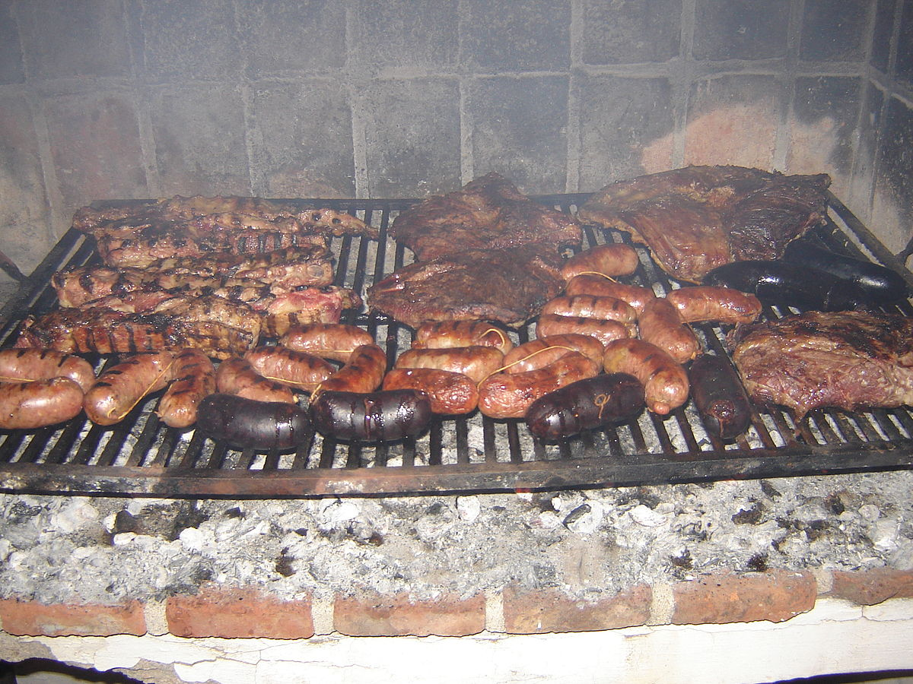

Asado

Asadito!
Receta sencilla (apta para no argentinos) para hacerse un asadito
Ingredientes
- Asado de tira
- Choris
- Chinchulines
- Pechito de cerdo
- Preparar un mate
- Prender el fuego: atención a no quedarse sin leña
- Cooción lenta y con algunos momentos de fuego más fuerte